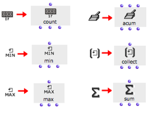

OpenMusic DocumentationHiérarchie de section : OM 6.6 User Manual > Visual Programming II > Iterations: OMLoop > Accumulators
OpenMusic DocumentationHiérarchie de section : OM 6.6 User Manual > Visual Programming II > Iterations: OMLoop > Accumulators
Navigation : page précédente | page suivante
Attention, votre navigateur ne supporte pas le javascript ou celui-ci à été désactivé. Certaines fonctionnalités de ce guide sont restreintes.
Accumulators
Function
At each step of an iteration, resulting data can be memorized and stored with the OMLoop accumulators . Accumulators execute storage or other operation upon the elements they are returned successively.
There are six accumulators :
 : Collect gathers the result of each step of a loop into a list.
: Collect gathers the result of each step of a loop into a list. : Sum returns the sum of the collected elements.
: Sum returns the sum of the collected elements.: Min and max return the lowest and highest value among a set of collected elements.
 : Counter counts the number of non-nil collected elements.
: Counter counts the number of non-nil collected elements.: Acum allows to define specific accumulation procedures.
Adding Iterators

|
To add an accumulator in the OMLoop editor .
|
Inputs and Outputs
All accumulators but acum have a single input : this input is used for collecting the successive values during a loop.
All accumulator have three outputs, allowing to access their current "memory" :
- first output : executes a specific operation with each new collected element.
- second output : returns the current stat e of the accumulator's memory,
- third output : reinitializes the memory.

Références :
Plan :
Navigation : page précédente | page suivante
A propos...(c) Ircam - Centre Pompidou